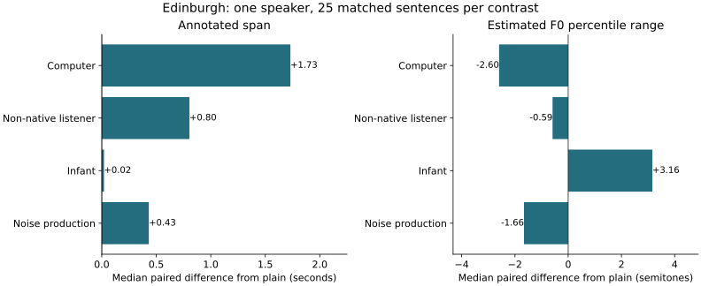
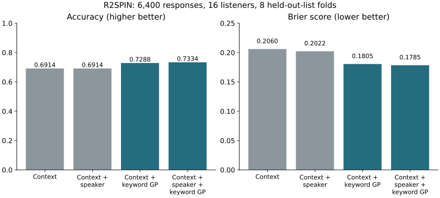

A1. Reading-confidence benchmark
600 teacher-labelled reading recordings were evaluated with fixed recording-level folds. Predictors were 88 eGeMAPSv02 functionals and duration/RMS mean, standard deviation and range. The full-feature saved logistic model was chosen for demonstration; the Random Forest was a benchmark comparison.
| Model | Balanced accuracy | Macro-F1 |
|---|---|---|
| Majority | 0.3333 | 0.1916 |
| Logistic | 0.7160 | 0.7104 |
| Random Forest | 0.7813 | 0.7849 |
Numeric code meanings were inferred from matching published class counts; an explicit release legend and authoritative speaker map remain unavailable. The agreement-selected child-reading sample is not adult clinical speech. Model probabilities do not measure internal confidence.
A2. Laughter-event feasibility
The private YAMNet demo hub contains eight distinct source-channel inventory entries, complete coverage records and 19 candidate intervals. Channels from the same session share content; the count is neither 19 independent laughter episodes nor an estimate of prevalence. The event pipeline applies a pretrained third-party ONNX conversion; this review did not establish its equivalence to the original TensorFlow model.
Informal user listening found plausible examples. There is no complete independent listening denominator, adjudicated event reference, precision/recall estimate or clinical-context score. The previously reported selected-clip tail miss was resolved by the user on 4 November and is not retained as a confirmed failure. Scores and thresholded intervals remain model outputs; support windows are not precise audible boundaries.
The private confidence demonstration likewise exposes domain and cross-talk problems, without a quantified clinical transfer test. Demo review approvals are not scientific validation. Inspected artifact names, hashes and provenance identify the checked local bundle without redistributing recordings or participant-level outputs.
Technical background: official YAMNet source; conversion used in the private demonstration. No public end-to-end replay of the clinical demo is provided because its inputs remain private.
A3. Human-perceived emotional delivery
A completed exploratory study on the separate demo branch used 720 CREMA-D recordings, 30 speakers, four shared sentences and six intended expressions. Targets came from independent audio-only listener votes, not filename emotions. Sixty-two tied pluralities were excluded from fitting and single-label scoring while retained in the study record. Preprocessing used training data only; validation selected logistic regularisation, with no refit on validation data. Test speakers were held out.
| Split | Speakers | Scored / selected | Model / majority macro-F1 |
|---|---|---|---|
| Training | 20 | 432 / 480 | 0.886 / 0.110 |
| Validation | 5 | 113 / 120 | 0.355 / 0.117 |
| Test | 5 | 113 / 120 | 0.367 / 0.117 |
Shared sentences, acted delivery, five test speakers, finite listener disagreement and excluded ties limit interpretation. The original five demo clips include a tie; the model matches only 2/4 non-tied listener pluralities versus 3/4 for the majority baseline. Those failures are retained. Audio-only ratings used upstream MP3 presentations, whereas feature extraction used matched WAVs; codec effects were not evaluated. No clinical, causal-coaching or probability-calibration claim follows.
The source branch also contains controlled RAVDESS happy/sad pairs and CREMA-D examples illustrating that an identical supplied transcript can accompany different delivery. These are demonstrations, not a clinical validation set.
- Immutable study methods, all split metrics and demo failures
- Exact implementation and offline replay · Aggregate snapshot
- Attribution and database/contents terms · Official CREMA-D source
PR #2 remains a separate software review. The report cites completed evidence at its immutable commit without merging that branch or copying its row-level data.
A4. Production contrasts and human recognition
Edinburgh compares 25 matched sentences across five conditions from one speaker. Annotation span and pitch are descriptive measurements. R2SPIN tests prediction of binary keyword recognition using published context and audibility data. Neither dataset validates our speaker-side acoustic features against clinical intelligibility.


- Annotation discrepancies, sensitivity analysis and per-fold findings
- 12-recording pitch diagnostic and its limits
- SLUSI/Clarity access and audio-label alignment audit
- Historical listener-recognition protocol — a proposal, not the approved within-rubric study
A5. Reproduction and interpretation
Full speech reproduction instructions distinguish public aggregates from required private inputs. Reading and R2SPIN models were reproduced in earlier work; no model was trained during submission editing. The current checks recompute metrics from aggregate evidence and run relevant software tests.
The original recordings, private feature tables and saved models remain outside the repository. Existing software is preserved, including historical PVC prototypes; its directory names do not redefine the current research scope. See the history register for superseded plans and the final QA record for this revision’s checks.